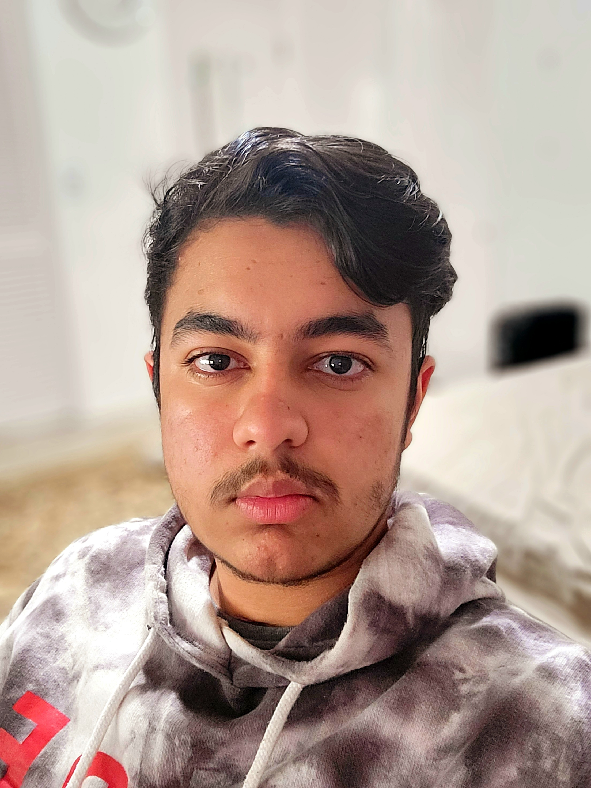

I have been studying computer science for over a year, I love how
you can code and solve real-life problems. I have experience in QA
automation, basic web development, and some game development, the
next thing I want to focus on is Machine Learning. Some languages I
have worked with are Python, JavaScript, and C#. The next language I
plan on learning is C++. I am currently taking an Advanced Computer
Science Course, where we have learned about GitHub, and Agile
Methodology, and also made a few projects. The projects I have
worked on are a Bot that auto buys a thing from Best Buy (Scalper
Bot, I programmed that in JavaScript), the next thing I worked on
was a Kahoot bot that joins 100s of bots to Kahoot live to test the
user limit on Kahoot servers (also programmed in JavaScript). I have
also made a basic website to learn HTML, CSS, and JS. Last but not
least I have built a Quizlet live bot that adds 100s of bots to a
Quizlet live game to test the user limit on Quizlet servers. I got
into programming my sophomore year of high school where I have been
coding and coming up with new project ideas ever since. It has been
about 2 years, and I plan to go to PCC this year even though I am
supposed to be a senior. Some of my previous job experience involved
working in a covid center where I would talk to 500-1000 customers a
day and give them instructions on how to use the covid testing kit.
I was responsible for leading a team of 5 people to ensure the
day-to-day operations went smoothly. I also worked at my uncle's
restaurant where I helped with preparing meals. This strengthened my
communication and leadership skills. I would love to work with your
company as the skills I have and the skills I will learn will
benefit both parties. I look forward to hearing from you soon.